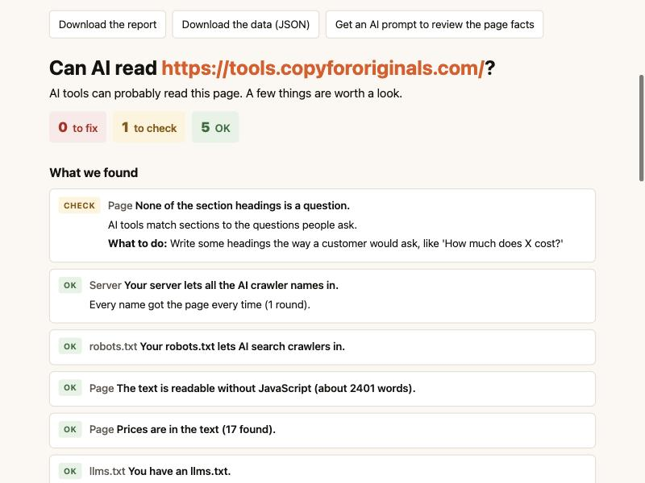

Copy for Originals · Free tool · AI search
“Can AI read my site?” is a free tool. It reads your page the way an AI crawler does and finds your prices, dates and hidden text. It tests your server against Google and Bing to see if AI crawlers get turned away. It also writes a prompt that lists the facts your page is missing. You type in a web address, and about a minute later you get a short report that says what to fix.
Being readable is the first step to showing up in AI answers. This tool tests that step. It reads your page the way most AI crawlers do, without running JavaScript. Then it tells you if your prices, dates and main text are easy to find. It also asks for your page using the names of AI crawlers, Google and Bing. That shows if a firewall is turning AI tools away. You can run it on your own computer. Your IT team can also run it on a company server for everyone.

It checks three things, in this order. Each result is marked Fix, Check or OK, with a plain “what to do” line.
It counts the words a crawler can see without JavaScript. It looks for prices, dates and hidden text. It checks if your headings are written as questions. It also flags prices that only live in hidden code.
It asks for your page as a normal browser, as nine AI crawlers, and as Google and Bing. It does this a few times, in a random order. Then it compares the answers.
robots.txt is a small file that tells crawlers what they may read. The tool reads yours the way the official rules say crawlers should. It shows which AI crawlers may read the page you checked.
Because an AI can get into your site and still find nothing to quote. Checking the door is a good start, and several free tools do it well. This tool also looks at what’s inside.
The tool can also write a prompt for you. Paste it into ChatGPT, Claude or Gemini. The AI then lists which facts your page is missing: price, what’s included, who it’s for, how long it takes and what can go wrong.
Why these things matter is explained in our guide, what decides whether an AI recommends you.
Because one test can fool you. This is the method from our study of 100 law firm websites.
In that study, 13 of 78 sites turned away an AI crawler’s name every time. But 12 of those 13 sites had nothing in robots.txt to show it. The block came from a firewall, a hosting company or a security plugin. The owner usually didn’t know. And 11 of the 13 let Google’s and Bing’s names in.
So the tool asks several times, a few seconds apart. It also asks as Google and Bing. Comparing the answers tells you what kind of problem you have:
| What you see | What it probably means | What to do |
|---|---|---|
| AI names turned away. Google and Bing let in. | A rule is aimed at AI crawlers. | Ask your host or IT team about bot rules. |
| AI names and Google or Bing turned away. | Your server may check if visitors are real. The real crawler may get in. | Look in your server logs. |
| Sometimes let in, sometimes not. | Often a limit on how many requests come in at once. | Run the check again later. |
| Everyone let in. | No block from this test. | Move on to the facts on the page. |
Yes, and some are very good. If you only want to know if AI crawlers can reach your home page, try one of these. You don’t need to install anything.
Use our tool when you also want to know if an AI can find the facts on your page. Use it when you want the Google and Bing comparison. Or use it when your company wants to run the test on its own server.
You need Python 3.9 or newer. Macs already have it. There is nothing else to install.
cd and a space, drag the unzipped folder into the window, and press Enter.python3 -m can_ai_read serve --openType the command and your address. The report prints in Terminal.
python3 -m can_ai_read https://yoursite.com/Add --html report.html to save a report you can send to someone. Add --prompt prompt.txt to save the AI prompt.
Your IT team can run the web page on a company server with Docker. The IT guide covers the settings, sign-in and network rules. By default, the server will not check private or internal addresses. IT can also limit it to your own domains.
| Result | What it means | Examples |
|---|---|---|
| Fix | Something is probably keeping AI tools out, or hiding your facts. | Your server turns away OAI-SearchBot. Most of the page is built by JavaScript. A price is only in hidden code. |
| Check | Worth a look. It may be fine, or it may be a choice someone made. | No prices in the text. No visible date. You block AI training crawlers. |
| OK | Nothing to do. | All crawler names let in. Text readable without JavaScript. |
One result needs a word of care. Blocking training crawlers like GPTBot and ClaudeBot keeps your pages out of AI training. It does not remove you from AI answers. Blocking search crawlers like OAI-SearchBot does. The tool keeps the two apart.
Yes. “Can AI read my site?” is free and open source under the MIT license. You can use it, change it and share it. It runs on your own computer or server, so there is no account and no sign-up.
No. The tool only contacts the website you ask it to check. It has no tracking. The web version keeps results in memory for one hour and never saves them to disk.
It shouldn’t. A standard check sends about 35 requests to the page over a minute or two, spaced out and in a random order. Only check sites you own or have permission to test.
To compare. If your server lets Google’s name in but turns away an AI crawler’s name, the block is probably aimed at AI tools. If it turns away both, your server may be checking whether visitors are real, and the real crawlers may get in. In our study of 100 law firm websites, 11 of the 13 sites that blocked an AI crawler’s name let Google’s and Bing’s names in.
Each result in the report says what to do. Most server blocks come from a firewall, a hosting company or a security plugin, so start by asking whoever runs those. For problems with the facts on your page, start with price, a visible date and text that shows without JavaScript.
The tool’s code: github.com/jbastide/can-ai-read-my-site.